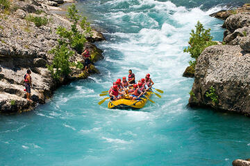

Well, the five of us (Robert, Kevin (yes, THAT Kevin), Guillermo, Johny, and Ernest) all grew up here in families that probably spent more time outdoors than indoors. We met in June of '03 at our local rafting club. The instructor insisted on piling us all into the same raft, despite Guillermo's being severely horizontally challenged. Needless to say we were all drenched not long after pushing off from shore, but nonetheless had such a laugh that we have remained tight since. Five years later, upon graduation from high school, we started Dry Oar, originally as a side-hobby and an excuse to hang out more often after finishing school. Ironically, our clients kept sending referrals our way, and we soon found less time to spend with each other than we did when we were still in school! Blessed to be stressed, as the saying goes.